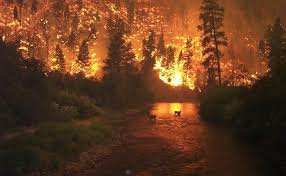
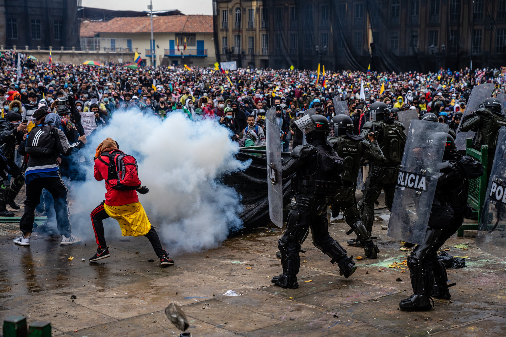

Una explosión en una bomba de gas en Santiago ha dejado varios heridos y daños materiales significativos.
Las autoridades están investigando las causas del incidente y han instado a la población a mantenerse
alejada de la zona afectada mientras se llevan a cabo las labores de rescate y limpieza. Unidades del
Cuerpo de Bomberos de Santiago se movilizaron de inmediato, logrando controlar el incendio tras más de 2
horas de arduo trabajo. La Policía Nacional y la Dirección General de Seguridad de Tránsito y Transporte
Terrestre (DIGESETT) acordonaron la zona para facilitar las labores.
Las autoridades han instado firmemente a la población a mantenerse alejada del lugar debido al peligro
latente por residuos y la inestabilidad de las estructuras afectadas.
La Unidad Técnica de Ingeniería de Explosivos ha iniciado una exhaustiva investigación para determinar
la causa exacta de la detonación, aunque las primeras hipótesis apuntan a una posible fuga en uno de los
tanques de almacenamiento.
Heridos: Los servicios de emergencia (911) confirmaron el traslado de 15 personas a centros médicos. Al
menos 5 de ellas presentan quemaduras de tercer grado y su estado es grave.
Daños Materiales: La estructura de la bomba de gas quedó totalmente destruida. Además, el radio de la
explosión afectó gravemente a 4 negocios adyacentes y al menos 10 vehículos que se encontraban en el
perímetro sufrieron daños totales o parciales por la onda expansiva y el fuego
Heridos Confirmados: Los servicios de emergencia (911) confirmaron el traslado de 15 personas
a centros médicos. Al menos 5 de ellas presentan quemaduras de tercer grado y su estado es grave.
Daños Materiales: La estructura de la bomba de gas quedó totalmente destruida.
Investigación en Curso: La Unidad Técnica de Ingeniería de Explosivos ha iniciado una
exhaustiva investigación. Las primeras hipótesis apuntan a una posible fuga en uno de los tanques de
almacenamiento.
Incendio forestal consume miles de hectáreas en el sur del país
Un voraz incendio forestal ha arrasado con miles de hectáreas de bosque en la región sur del país,
poniendo
en alerta a las autoridades y a la población local. El fuego, que se inició hace tres días, ha
destruido una vasta extensión de terreno y ha obligado a evacuar a varias comunidades cercanas.
Equipos de bomberos, apoyados por aeronaves y maquinaria pesada, trabajan sin descanso para controlar
las
llamas. Las condiciones climáticas adversas, con vientos fuertes y altas temperaturas, han dificultado
las labores de extinción.

Cientos de brigadistas del Ministerio de Medio Ambiente y Recursos Naturales, apoyados por efectivos del
Ejército Dominicano y la Defensa Civil, están en el terreno luchando contra las llamas en condiciones
extremas.
Recursos Aéreos: Se han utilizado 3 helicópteros equipados con el sistema Bambi Bucket para
realizar descargas de agua en los focos más activos e inaccesibles.
Daños a la Biodiversidad: Expertos en conservación estiman que la pérdida de especies
endémicas y la afectación al ecosistema es irreparable.
Peligro para Comunidades: Al menos 3 comunidades rurales han sido puestas en alerta máxima
debido a la proximidad del fuego, aunque hasta ahora no se reportan víctimas humanas.
Protestas masivas exigen reformas políticas y sociales
En una demostración sin precedentes de descontento ciudadano, miles de personas han salido a las calles
de
varias ciudades del país para exigir reformas políticas y sociales. Las protestas, que comenzaron de
manera pacífica, han escalado en intensidad en algunas áreas, con enfrentamientos entre manifestantes y
fuerzas de seguridad.
Los manifestantes demandan cambios en áreas clave como la educación, la salud y la lucha contra la
corrupción. Líderes comunitarios y organizaciones civiles han convocado a estas movilizaciones para
presionar al gobierno a tomar medidas concretas que respondan a las necesidades de la población.

Las autoridades han desplegado un contingente significativo de policías antidisturbios para mantener el
orden público. En algunas ciudades, se han impuesto toques de queda temporales para evitar desórdenes
mayores.
Demandas Clave: Los manifestantes exigen reformas en educación, salud y lucha contra la
corrupción.
Respuesta Gubernamental: El gobierno ha prometido abrir canales de diálogo con los líderes
de las protestas para abordar sus preocupaciones.
Impacto Económico: Las protestas han afectado el comercio local y el transporte público en
varias ciudades.
Descubrimiento arqueológico revela secretos de civilizaciones antiguas
Un equipo de arqueólogos ha realizado un descubrimiento significativo en una zona remota del país,
revelando
restos de una antigua civilización que datan de varios siglos atrás. Los hallazgos incluyen estructuras
arquitectónicas, artefactos y restos humanos que ofrecen una visión única de la vida y cultura de
nuestros
antepasados.
El sitio arqueológico, que ha sido objeto de excavaciones durante los últimos meses, ha proporcionado
información valiosa sobre las prácticas sociales, religiosas y económicas de la civilización que
habitó
la región.
Entre los artefactos recuperados se encuentran cerámicas decoradas, herramientas de piedra y joyas que
sugieren un alto nivel de sofisticación cultural.
Estructuras Descubiertas: Se han identificado varias edificaciones, incluyendo templos y
viviendas.
Artefactos Significativos: La variedad y calidad de los objetos encontrados indican una
sociedad avanzada.
Importancia Histórica: Este descubrimiento podría reescribir partes de la historia regional y
ofrecer nuevas perspectivas sobre las civilizaciones antiguas.